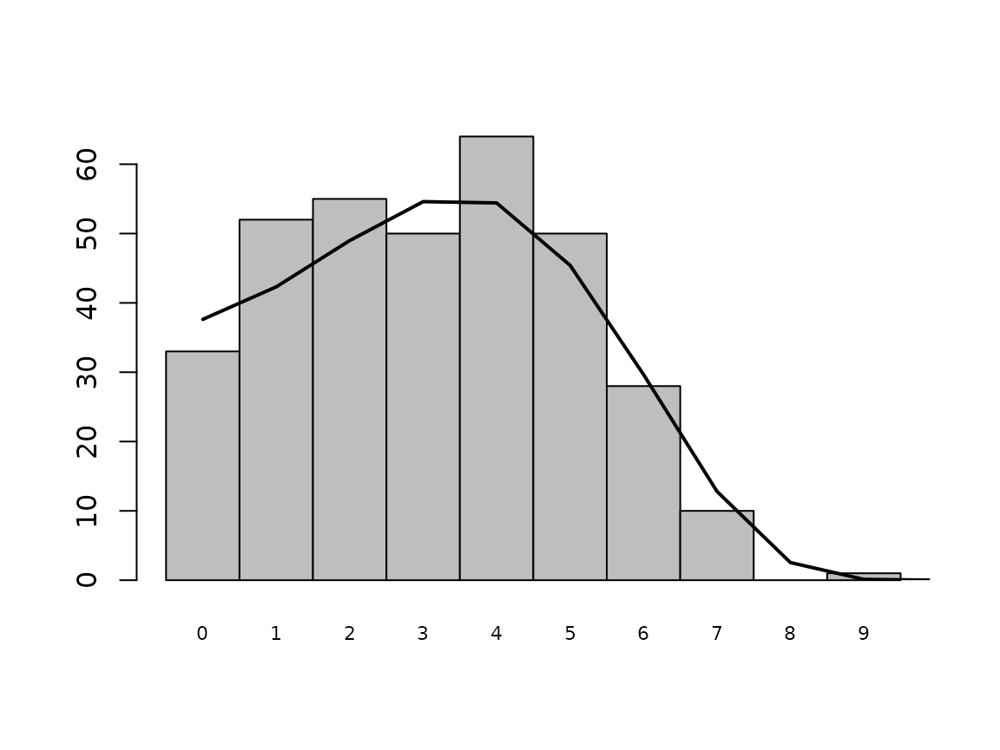
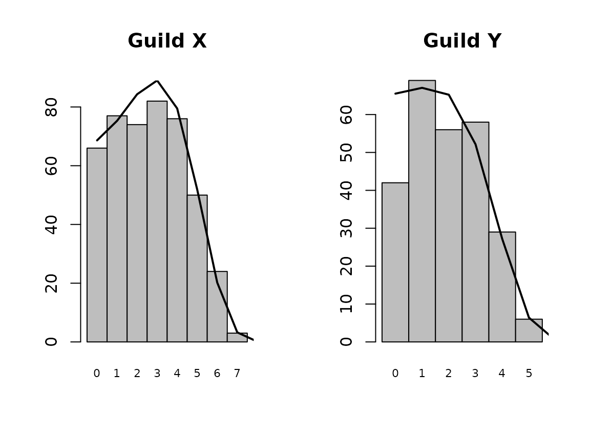
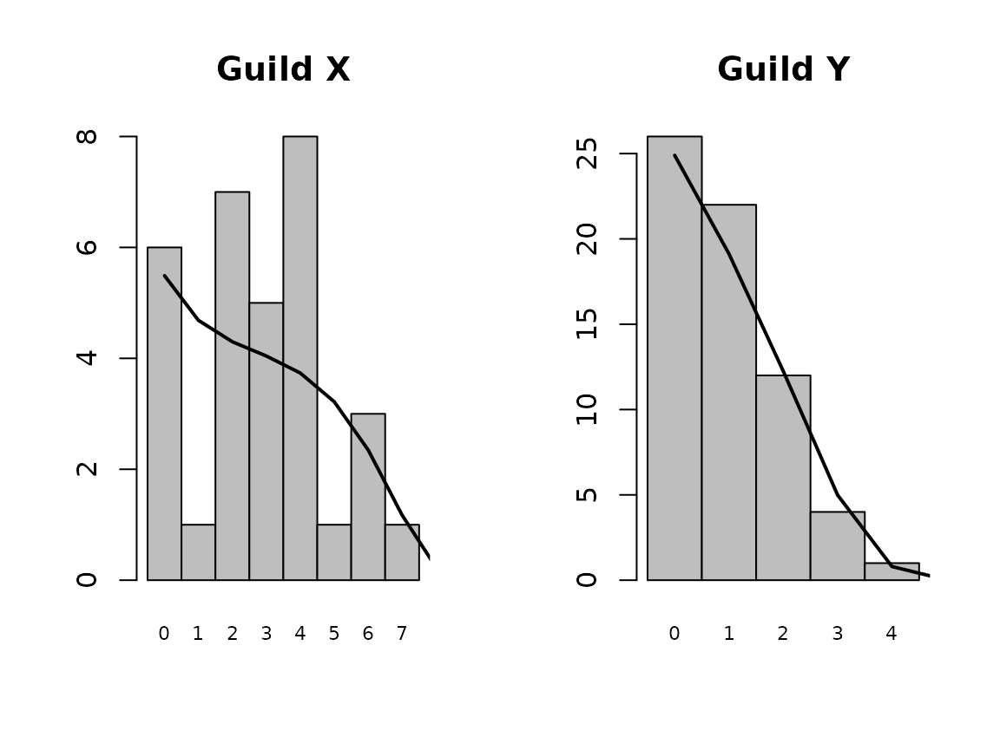

Guilds Vignette
Welcome to the vignette of GUILDS. GUILDS is an R package aimed at providing the user with easy to use functions that help dealing with the Unified Neutral Theory of Biodiversity and Biogeography. More specifically, the package bundles together the sampling functions for the Neutral Model including multiple guilds that differ in dispersal ability (Janzen et al. 2015), and the Etienne sampling formula for the standard neutral model. Furthermore, the package contains functions to generate artificial datasets, and to calculate the expected abundances.
The standard neutral model
To generate data with the standard neutral model, we can make use of
the function generate.ESF, where ESF stands for the Etienne
Sampling Formula. generate.ESF makes use of the urn scheme described in
Etienne (2005), where the avid reader can also find more details on the
Etienne Sampling Formula. The ESF combines the universal biodiversity
number theta, and the universal dispersal number I. Typically, the
migration rate is a bit easier to interpret, so we will make use of that
first, then convert it to I, and then generate the data:
set.seed(42)
theta <- 100
m <- 0.1
J <- 10000
I <- m * (J - 1) / (1 - m)
abund <- generate.ESF(theta, I, J)
abund## [1] 875 238 212 177 176 172 159 158 149 145 144 126 124 122 117 112 111 110
## [19] 110 109 108 108 106 101 99 95 93 92 86 80 80 79 78 77 76 75
## [37] 70 68 66 63 62 60 60 59 59 58 57 57 56 56 55 54 54 53
## [55] 52 51 51 50 48 47 46 46 45 44 44 43 43 43 43 42 42 41
## [73] 40 40 39 39 39 37 37 37 36 36 35 35 34 34 34 33 33 31
## [91] 31 30 30 30 30 30 29 29 28 28 28 27 26 26 26 26 26 26
## [109] 26 25 25 24 24 24 24 24 24 23 22 22 22 21 21 21 21 20
## [127] 20 20 20 20 20 20 20 19 19 19 19 18 18 18 18 17 17 17
## [145] 17 17 17 16 16 16 16 16 16 15 15 15 15 15 14 14 14 13
## [163] 13 13 12 12 12 12 12 12 12 11 11 11 11 11 11 10 10 10
## [181] 10 10 9 9 9 9 9 9 9 9 8 8 8 8 8 8 8 8
## [199] 8 8 8 8 8 7 7 7 7 7 7 7 7 7 7 7 7 6
## [217] 6 6 6 6 6 6 6 5 5 5 5 5 5 5 5 5 5 5
## [235] 5 5 5 5 5 4 4 4 4 4 4 4 4 4 4 4 4 4
## [253] 4 4 4 4 4 4 3 3 3 3 3 3 3 3 3 3 3 3
## [271] 3 3 3 3 3 3 3 3 3 3 2 2 2 2 2 2 2 2
## [289] 2 2 2 2 2 2 2 2 2 2 2 2 2 2 2 2 2 2
## [307] 2 2 2 2 1 1 1 1 1 1 1 1 1 1 1 1 1 1
## [325] 1 1 1 1 1 1 1 1 1 1 1 1 1 1 1 1 1 1
## [343] 1The package has now generated a nice species abundance distribution.
Using the function `preston_plot we can visualize our
abundance distribution
preston_plot(abund)
We can even do better, using the function expected.SAD
we can calculate the expected number of individuals per species.
Furthermore, we can easily add this to our plot:
abund.expect <- expected.SAD(theta, m, J)
preston_plot(abund, abund.expect)
We can clearly see that the simulated abundance distribution closely matches the expected distribution (the black line), although the stochastic nature of the simulation has caused some small deviations. Using the Etienne Sampling Formula we can now estimate theta and m, using maximum likelihood. Because we already know the real values (those are the values that we used to simulate the data), we can nicely crosscheck whether the Etienne Sampling Formula yields good results. We start the maximum likelihood at three different starting points, to compare convergence.
LL1 <- maxLikelihood.ESF(init_vals = c(theta, m), abund)
LL2 <- maxLikelihood.ESF(init_vals = c(100, 0.01), abund)
LL3 <- maxLikelihood.ESF(init_vals = c(10, 0.5), abund)
LL1$par## [1] 102.0395279 0.1159656
LL2$par## [1] 101.9890695 0.1150816
LL3$par## [1] 102.0662586 0.1158091Regardless of the starting point, we recover the same parameter estimates that are close to the real values theta = 100 and m = 0.1 .
Dispersal Guilds
The guilds model, as described in Janzen et al. (2015), asks a slightly different question from the standard neutral model. How would species abundances look if there would be two guilds of species, where the guilds would only differ in dispersal ability? Imagine for instance a forest, where some tree species disperse using wind-aided seed dispersal, and other tree species disperse using animal-aided seed dispersal. The model assumes that the two guilds share a local community, and the metacommunity, and share the same speciation dynamics (e.g. have the same theta). Dispersal is different however, and in contrast to the standard neutral model, where we would infer migration rates, here we asses the dispersal ability: the guilds model postulates that migration (m) is the product of the dispersal ability of the species (alpha) and the species’ frequency in the metacommunity (p).
Conditioning on Guild size
In the paper, we show that in order for parameter estimation to work reliably, we have to condition our sampling formula’s on guild size. The package also contains sampling formula’s without guild size, in order for the user to reproduce our train of thought, but here we will focus solely on situations where we have conditioned our sampling formula’s on guild size, and hence we assume that the user knows the number of individuals per guild.
So, without verder ado, let’s simulate some data and then apply the relevant sampling formula’s. We start by simulating data using the “D0” model, which assumes no differences in dispersal ability between the guilds (e.g. the guilds model then reduces to the standard neutral model)
set.seed(666)
theta <- 200
alpha_x <- 0.1
J <- 10000
J_x <- 8000
J_y <- J - J_x
abund <- generate.Guilds.Cond(theta, alpha_x, alpha_x, J_x, J_y)Again, we can calculate the expected distributions, and visualize our distributions. This time however, a small part of the calculation of the expected distribution can not be treated analytically, and has to be done via the means of simulation, so a larger number of replicates means a more accurate expected distribution. Here we will use a low number of replicates for computational reasons.
abund.expected <- expected.SAD.Guilds.Conditional(theta, alpha_x, alpha_x,
J_x, J_y, n_replicates = 5)
par(mfrow = c(1, 2))
preston_plot(abund$guildX, abund.expected$guildX, main = "Guild X")
preston_plot(abund$guildY, abund.expected$guildY, main = "Guild Y")
Before, we set the size of Guild X to 8000 individuals, and the size of Guild Y to 2000 individuals. From the Preston plots we notice that indeed Guild X contains more species, but that apart from that, there are not many striking differences (we assumed equal dispersal of course!) Now that we have our data, we can apply the guilds’ sampling formula, and see whether it can accruately infer parameter values.
LL <- maxLikelihood.Guilds.Conditional(init_vals = c(theta, alpha_x),
model = "D0",
sadx = abund$guildX,
sady = abund$guildY,
verbose = FALSE)
LL$par## [1] 180.6348705 0.0995815We see that the maximum likelihood algorithm accurately infers the value of alpha, and gets relatively close to inferring the right value of theta. If we would want to infer the rate of migration, we could, in this case, also apply the standard neutral model (after all, there were no differences in dispersal, rendering the guilds construction obsolete):
LL1 <- maxLikelihood.ESF(init_vals = c(theta, alpha_x),
abund = c(abund$guildX, abund$guildY),
verbose = FALSE)
LL1$par## [1] 246.0613192 0.2132893Using the ESF, we find a slightly higher estimate for theta (but notice that the mean of the two estimates becomes really close to the value we put in), and we find a higher value for m.
Guilds model with differences in dispersal
So, what happens if we assume differences in dispersal? Let’s, for fun, assume that there are two guilds (guild X and Y), where guild X is much bigger, but where species from guild X have a much lower dispersal ability:
set.seed(666 + 42)
theta <- 200
alpha_x <- 0.01
alpha_y <- 0.1
J <- 1000
J_x <- 800
J_y <- J - J_x
abund <- generate.Guilds.Cond(theta, alpha_x, alpha_y, J_x, J_y)This generates the following dataset:
abund.expected <- expected.SAD.Guilds.Conditional(theta, alpha_x, alpha_y,
J_x, J_y, n_replicates = 5)
par(mfrow = c(1, 2))
preston_plot(abund$guildX, abund.expected$guildX, main = "Guild X")
preston_plot(abund$guildY, abund.expected$guildY, main = "Guild Y")
Clearly, there are now strong differences in the community distributions: the larger guild has a much broader distribution, with much less singletons than the smaller guild. Again, we can use maximum likelihood to infer the parameters from the data:
ML1 <- maxLikelihood.Guilds.Conditional(init_vals = c(theta, alpha_x, alpha_y),
model = "D1",
sadx = abund$guildX, sady = abund$guildY,
verbose = FALSE)Maximum likelihood estimation shows that we can accurately infer the underlying parameters. Furthermore, we can test whether the model assuming differences in dispersal between guilds better explains the data, than the model without. We do this by also fitting the model without differences to the data, and compare the estimated likelihoods:
ML2 <- maxLikelihood.Guilds.Conditional(init_vals = c(theta, alpha_x),
model = "D0",
sadx = abund$guildX, sady = abund$guildY,
verbose = FALSE)To do an honest comparison, we have to correct for the extra parameter (alpha_y) in the “D1” model, we do this by calculating the AIC value:
AIC_D1 <- 2 * 3 - 2 * -ML1$value
AIC_D0 <- 2 * 2 - 2 * -ML2$value
AIC_D1## [1] 153.4068
AIC_D0## [1] 194.3186The AIC of the D1 model is lower, indicating a much better fit - as expected.
This concludes the vignette. Go out there, find abundance data and check whether the data has guild structure! If not, use the ESF, but if you can come up with a potential guild structure, apply the conditional guilds sampling formula! Don’t forget to apply both the model with, and without differences in dispersal ability, in order to verify that the guilds really differ in dispersal ability!